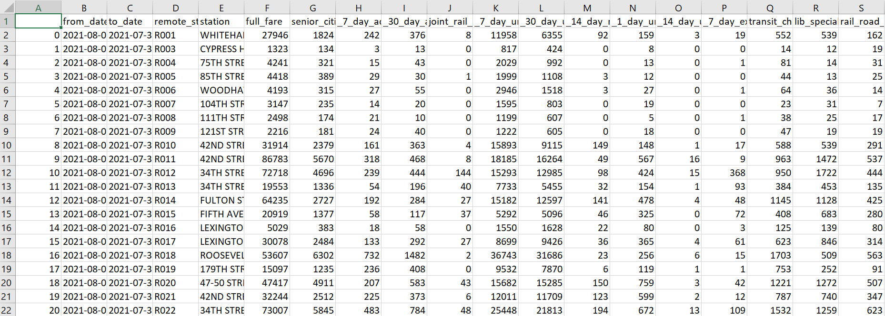

The following data were primarily acquired from the NYC MTA's Open Data Program through the use of their Socrata Open Data API (SODA). Links for specific data sets will be provided, but a large portion of those individual data sets were sourced from the following document: MTA Open Data Catalog. The data sets represented in images in the following section can be downloaded by clicking on the respective image.
MTA System Turnstile Usage DataCentral to analyzing the effectiveness of the various methods |
|
MTA Fare Card DataMost modes of local NYC public transportation can be accessed using the Metrocard, which is swiped when entering any subway station or boarding any bus. The MTA collects and aggregates these swipes for each subway station each week, which are delineated by the type of Metrocard used, where full fare is the standard type. The image to the right shows the first 20 rows of this data set, which contains almost 100,000 rows, spanning from January 2017 to August 2021. The raw data set from the MTA website (found below) contains data tracing back to 2010, although these data were omitted as this analysis does not cover MTA data prior to 2017, primarily due to the availability of data that the MTA provides. Numerous columns are omitted in this image due to space constraints, but these omitted columns are simply more types of Metrocards, which, although less used than the pictured types of metrocards, will still be considered in this analysis. The full data set from which this image was generated can be downloaded by clicking on the image. Each row represents a given week's aggregation of Metrocard swipes (i.e., station entries) at a particular station in the NYC Subway network. These data were acquired through the use of the Socrata API, and the script used to extract these data can be found here and the original source of the data can be found here |
 |
Customer Feedback DataThe MTA gathers customer feedback regarding number of complaints by transit type (e.g., subway, bus) and tabulates the total number of complaints and commendations received regarding these varying transit mediums. The image of the dataset to the right contains the most recent three months worth of raw data that was acquired through the use of the MTA's Socrata API via Python. These data span from October 2017 to June 2022, and cover numbers of complaints and commendations received by the MTA with regard to ridership by transit medium. The Access-A-Ride rows will be disregarded in the analyses of this project. The complaint and commendation rates are the number of complaints/commendations per 100,000 rides of each respective delineated subject matter. The Python code that extracts this data via the Socrata API can be downloaded here and the original source of the data can be found here. |
|
NYC Subway Geospatial DataAdditionally, the MTA records very specific location data on their subway stations, including specific latitude and longitude on each entrance and exit of every station on the network. The image to the right displays the first twenty rows of this data set, although the columns that regard the specific latitudes and longitudes of individual entrances/exits are omitted as they are not necessary to this analysis, although the full data set can be downloaded through the sources listed below or by clicking on the image to the right. In this analysis, the overall geospatial location of the NYC subway stations will be used as well as the existence/lack thereof of disability access and staffing. The accessibility of these stations is incredibly important when analyzing the overall effectiveness and suitability of the NYC subway system as a whole, although the specific geospatial data of each individual entrance and exit is not of use. These data were extracted using the MTA's Socrata API using Python using code that can be downloaded here and the original source of the data can be found here |
|
NJ Transit Data |
|